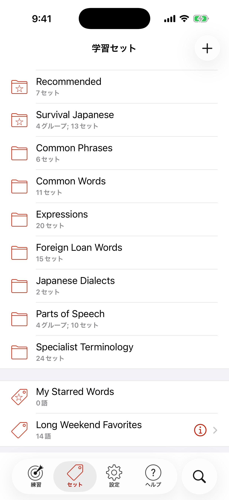

セットを選ぶ
セットタブをタップして、セットを選びます。セットはフォルダに分かれていて、検索もできます。

検索するには、画面を下にスワイプして検索バーを表示します。セット名の一部を入力すると、すぐに結果が表示されます。
セットを作る
セットタブをタップし、右上の＋をタップすると、新しいセットを追加できます。
新しいセットに単語を追加するには、検索を使うか、ほかのセットのカードからアクションボタンで追加します。
セットタブをタップして、セットを選びます。セットはフォルダに分かれていて、検索もできます。

検索するには、画面を下にスワイプして検索バーを表示します。セット名の一部を入力すると、すぐに結果が表示されます。
セットタブをタップし、右上の＋をタップすると、新しいセットを追加できます。
新しいセットに単語を追加するには、検索を使うか、ほかのセットのカードからアクションボタンで追加します。